Portée Pomsky · Janvier 2025

Luna et ses bébés · 3 jours

Arctic Jr · Premier hiver

Sieste royale

Le regard de Milo
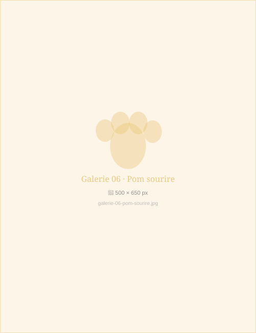
Cannelle · Sourire du matin

Shadow · Hétérochromie

Premières pattes · Portée de mars
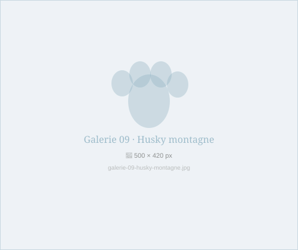
Cimes Blanches · Valais

Ballade estivale · Sierre
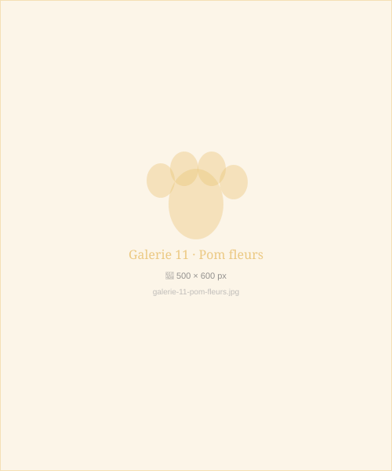
Neva · Prairies de Crans
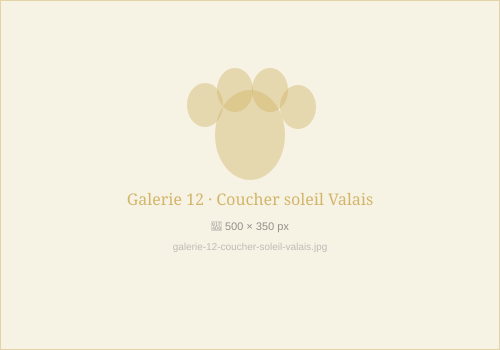
Fin de journée · Sierre

Thor · Papa de portée
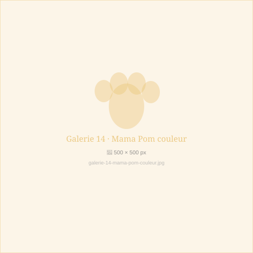
Bijou · Reproductrice d'élite
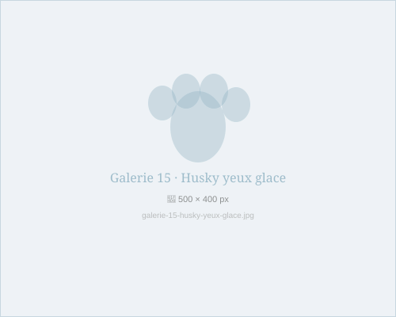
Blizzard · Papa Husky
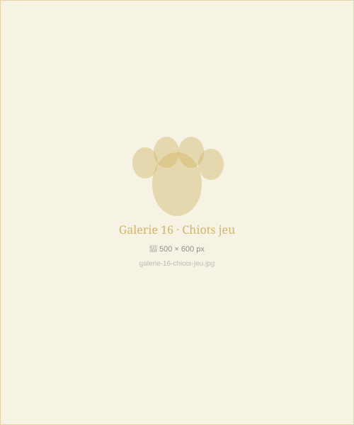
Partie de jeu · 6 semaines
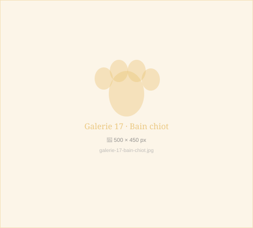
Premier bain · Cannelle
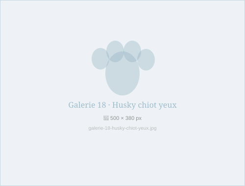
Storm · 14 jours · Premiers regards

Première grande aventure

Famille Müller · Sion
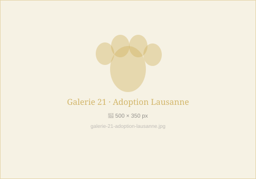
Isabelle & Cannelle · Lausanne
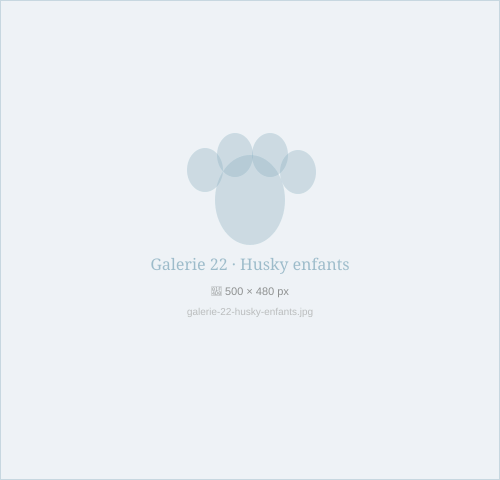
Famille Zimmermann · Crans-Montana
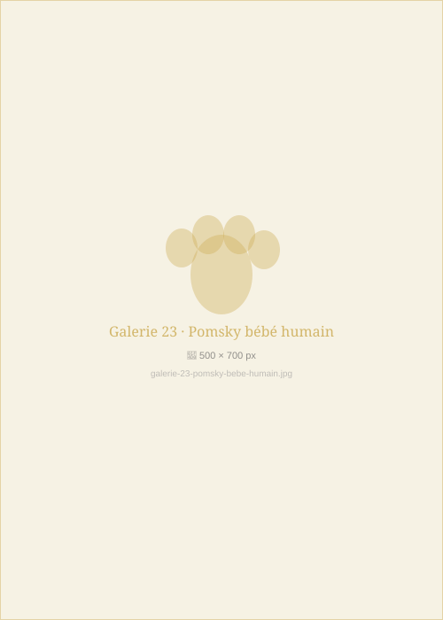
Luna et le petit Louis · Genève
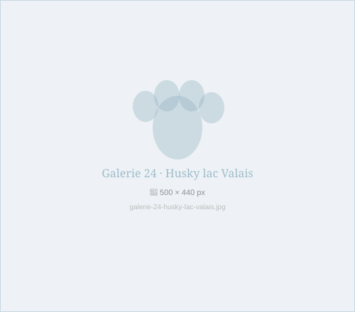
Lac de Géronde · Sierre

Automne doré · Vignobles de Sierre

Trio de printemps · Portée mars 2025

Zara · Robe Arctic
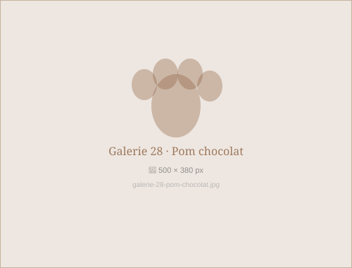
Kiki · Robe chocolat
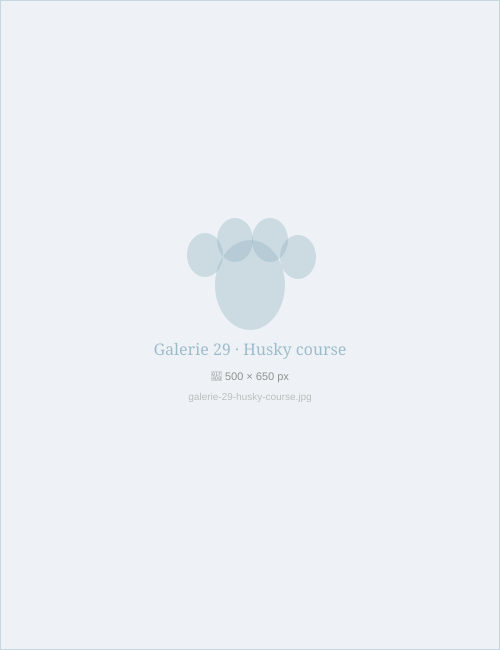
Blizzard · Sprint matinal
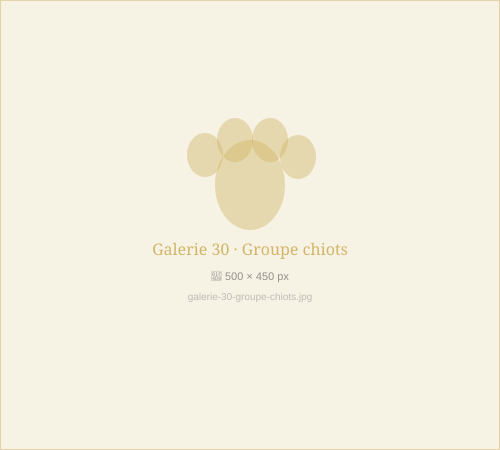
Famille recomposée · Portée mixte